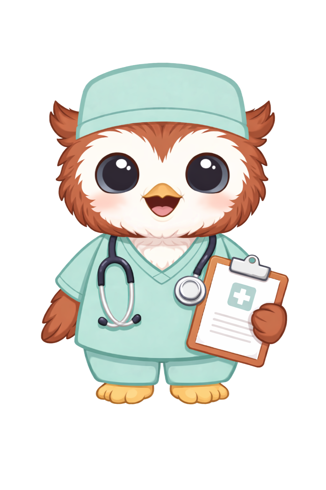

Gestão cirúrgica
sem complicações.
A ScalpelAid nasceu com o propósito de simplificar a gestão do currículo cirúrgico, transformando o registo das intervenções em algo prático, rápido e intuitivo.
A ferramenta indispensável no teu dia-a-dia de cirurgião para otimizares o teu tempo e teres estatísticas pessoais à distância de um clique.

Registo pormenorizado,
sem perderes tempo.
Sabemos que o percurso do teu internato cirúrgico é pautado por desafios diários, exigindo uma grande conciliação e organização pessoais. O registo das tuas intervenções é crucial para a tua correta avaliação curricular, mas sabemos que devido ao volume de trabalho, esta é uma tarefa que muitas vezes deixas em segundo plano.
Ao registares as cirurgias na ScalpelAid, podes facilmente consultar a tua casuística, manter o controlo total das tuas metas e objetivos e otimizar o teu tempo.
Histórico cirúrgico
sempre atualizado.
Compreendemos que, mesmo como especialista, careces de um registo atualizado das tuas intervenções cirúrgicas.
Ao registares as tuas cirurgias, podes facilmente consultar o teu histórico, verificar a tua casuística e manter o controlo total dos teus registos através de análises visuais claras e imediatas.
A otimização que o teu
currículo
necessita.
Junta-te a vários cirurgiões que já gerem a sua casuística de forma eficiente. Disponível para iOS e Android.